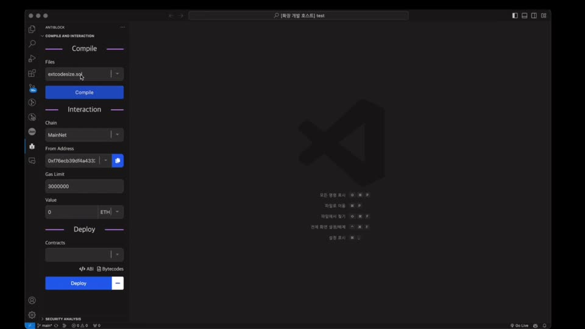
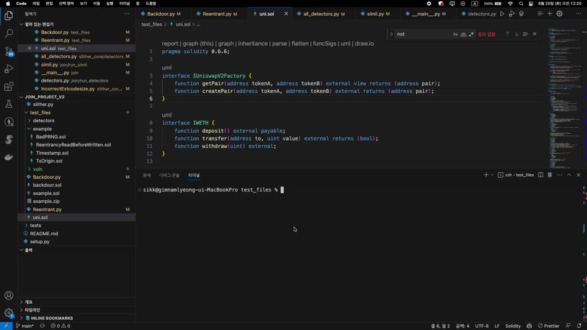

Research / On-chain
DeFiSense
여러 DeFi 프로토콜을 거친 이벤트 로그와 거래 트레이스를 경제행위 단위로 연결합니다. 공격 과정과 자금 이동, 손익과 원인을 하나의 그래프로 복원해 피해 자산이 어디로 이동했으며 손실이 어떤 과정에서 발생했는지 확인하는 분석 방법을 개발하고 있습니다.
직접 구현한 도구와 진행 중인 연구를 모았습니다.
대표 작업부터 살펴볼 수 있습니다.

Tool / Smart Contract SafeDevAnalyzer 스마트 컨트랙트를 배포하기 전에 코드와 취약점을 확인하는 VS Code 도구입니다. 3인 팀장, Protocol Camp 5기 대상 Research / On-chain DeFiSense 여러 프로토콜을 거친 거래를 연결해 공격 과정과 자금 이동, 손익의 원인을 복원합니다. Ongoing Research Research / Distributed Ledger rPBFT: Reliable Practical Byzantine Fault Tolerance Mechanism for Faulty Distributed Networks 비악의적 장애가 발생한 분산 네트워크에서 합의 성능과 안정성을 함께 비교했습니다. 공동 제1저자, IEEE Transactions on Big Data 2026
Tool / Static Analysis JOIN 버전과 분석 환경이 다른 외부 컨트랙트를 같은 절차로 검토하는 Python CLI입니다. Static Analysis Development 담당 Research / Digital Identity T-DID: DID/VC Threat Classification and Detection Framework DID/VC 환경에서 수행된 보안 검사를 사후에 확인할 수 있는 위협 분류와 로그 구조를 설계합니다. Ongoing ResearchResearch / On-chain
여러 DeFi 프로토콜을 거친 이벤트 로그와 거래 트레이스를 경제행위 단위로 연결합니다. 공격 과정과 자금 이동, 손익과 원인을 하나의 그래프로 복원해 피해 자산이 어디로 이동했으며 손실이 어떤 과정에서 발생했는지 확인하는 분석 방법을 개발하고 있습니다.
Research / Distributed Ledger
하드웨어 노후화나 일시적인 통신 오류처럼 악의 없이 발생하는 장애를 FSI로 추적하고, 신뢰도가 높은 노드로 합의 그룹을 구성했습니다. 정상 환경의 처리량뿐 아니라 장애가 발생했을 때 합의 유지 여부와 통신 비용, 지연시간을 함께 비교할 수 있습니다.
Research / Digital Identity
DID/VC 표준과 MITRE ATT&CK, AADAPT, CWE, 공개 구현체를 분석해 DID 환경에 맞는 위협 분류체계를 만들었습니다. 신원 검증의 성공 여부뿐 아니라 어떤 보안 검사가 실제로 수행됐는지 기록하도록 공통 로그 스키마를 설계하고, 이를 적용한 탐지 프레임워크를 검증하고 있습니다.
역할문제 정의부터 기획, 설계, 개발까지 전 과정 수행
소스코드의 pragma를 읽어 필요한 Solidity 컴파일러를 자동으로 탐지하고 설치하고 전환합니다. 버전이 서로 다른 외부 컨트랙트도 같은 분석 절차로 검토할 수 있도록 환경 설정을 자동화했습니다.
Related ProjectSafeDevAnalyzer
역할보안 아이디어 도출부터 구조 설계, Solidity 구현, 검증까지 전 과정 수행
msg.sender 기반 글로벌 락에 Cooldown과 Nonce 검증을 결합해 재진입과 반복 호출을 방어하는 스마트 컨트랙트 보안 모듈입니다. 함수 하나만 잠그는 방식으로 막기 어려운 호출 경로까지 함께 통제합니다.
Related ResearchDeFi Smart Contract Security